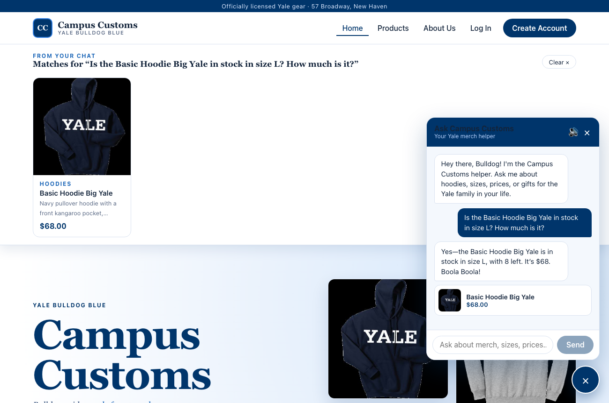
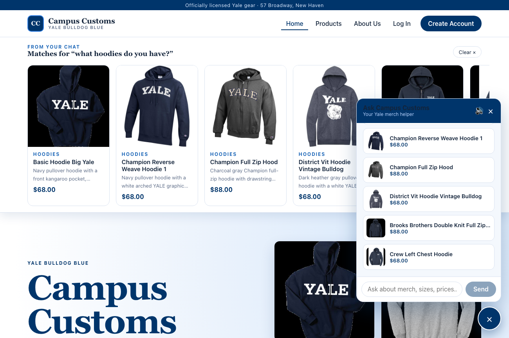
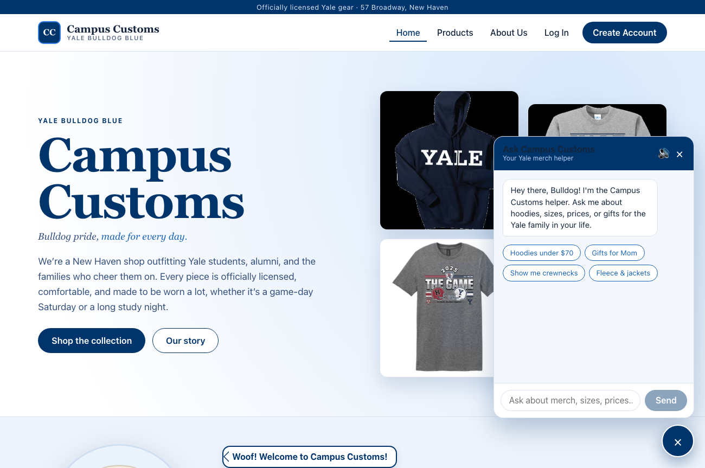

Homework 4, Problem 11 · three tests run against the running site and FastAPI + PydanticAI backend.
Each screenshot below was captured from the live app (frontend on :5173, backend on :8000) reading the real campus_customs.db.
Check 1 — Inventory
Chat checks real stock & price from the database

Asked "Is the Basic Hoodie Big Yale in stock in size L? How much is it?", the assistant replies
"in stock in size L, with 8 left. It's $68." Those numbers match the database exactly
(price $68.00, size L quantity 8), proving the agent reads live stock and price rather than guessing.
Check 2 — Dynamic cards
Category question updates the page with product cards

Asking "what hoodies do you have?" makes the agent search the catalogue and the
"From your chat" strip appears on the page with matching hoodie cards (image, name, price, short info).
This proves the chat's structured matches render live on the site, each card linking to its product page.
Check 3 — Usability (Problem 9)
Quick-reply chips help shoppers start the chat

On a fresh conversation the chat shows tappable starter prompts
(Hoodies under $70, Gifts for Mom, Show me crewnecks, Fleece & jackets).
This proves the Problem 9 usability feature works: shoppers can begin browsing with one tap instead of typing.